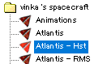
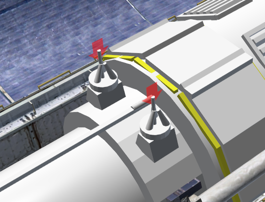
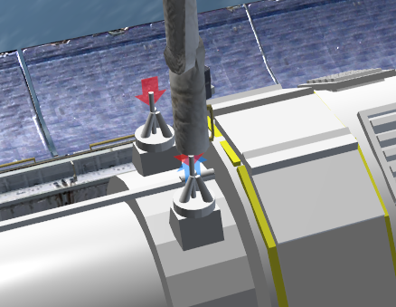

Spacecraft3 キー操作一覧
Spacecraft3.dll+Multistage2.dll+Stage.dllのダウンロード
キー操作一覧
Spacecraft3を使用して作られたMODでは、以下の操作でロボットアームなどを動かすことができます。
重要：テンキーの数字キーを使う場合は、必ずNumLockを解除すること。
重要：ShiftキーとCtrlキーは両方とも左側にあるものだけを使用すること。
| J | ペイロードを切り離し |
| K or G | 可動部分を操作する |
| Shift+テンキー0～9 | 可動部分を操作する |
| Shift+Ctrl+テンキー0～9 | 逆方向に操作する |
| Ctrl + A | モジュールの取り付け・切り離し(Attachment)の開始 |
| Shift+テンキー4 or 6 | 取り付け位置の選択 |
| Shift+テンキー0 | モジュールの取り付け・切り離し |
| Shift+テンキー5 | 取り付け位置(grapple points)を矢印で表示する |
| SPACE | ロボットアームの起動 |
| Shift+テンキー4 or 6 | アームの関節を選択 |
| Shift+テンキー2 or 8 | 関節を曲げる |
| Shift+テンキー0 | ペイロードの固定・切り離し |
| Shift+テンキー*（アスタリスク） | RCSの起動・停止 |
| Shift+テンキー.（ピリオド） | 動翼の起動・停止 |
チュートリアル
モジュールの取り付け・切り離し、ロボットアームの操作について解説します。
使用するシナリオはvinka's spacecraftフォルダのAtlantis - Hstです。

準備
ゲームを開始したら、NumLockを解除する。
Spacecraft3に特有の操作をするときは、必ずNumLockを解除しておくこと。
取り付け位置(grapple points)を表示する
左Ctrl + Aを押すと、モジュールの取り付け・切り離しモードになる。
この状態で左Shift + テンキー5を押すと、取り付け位置(grapple points)が矢印で表示される。

ロボットアームを操作する
Spaceキーを押すと、ロボットアームを操作できる。
この状態で左Shift + テンキー4 or 6を押すと、操作する関節を選択できる。
左Shift + テンキー2 or 8を押すと、選択されている関節を曲げる。
ロボットアームを操作して、先端の青い矢印をペイロードの赤い矢印に重ねる。

ペイロードを分離する
左Ctrl + Aを押す。
Attach:bay middle:hstと表示された状態で、左Shift + テンキー0を押す。
重要：あらかじめペイロードを分離しておかないと、ロボットアームで接続できない。
ペイロードを接続する
左Shift + テンキー4 or 6を何度か押して、Attach:rms:<free>に切り替える。
これでロボットアーム先端の接続ポイントが選択される。
この状態で左Shift + テンキー0を押すと、ロボットアームの先端にペイロードが接続される。
ハッブル望遠鏡を操作する
F3キーを押して、hstを選択してOKをクリック。
これでペイロードのハッブル望遠鏡が操作できる。
左Shift + テンキー1 or 2 or 3を押すと、アンテナや太陽電池パネルが展開される。